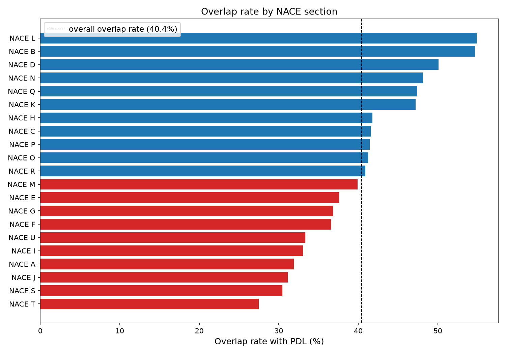
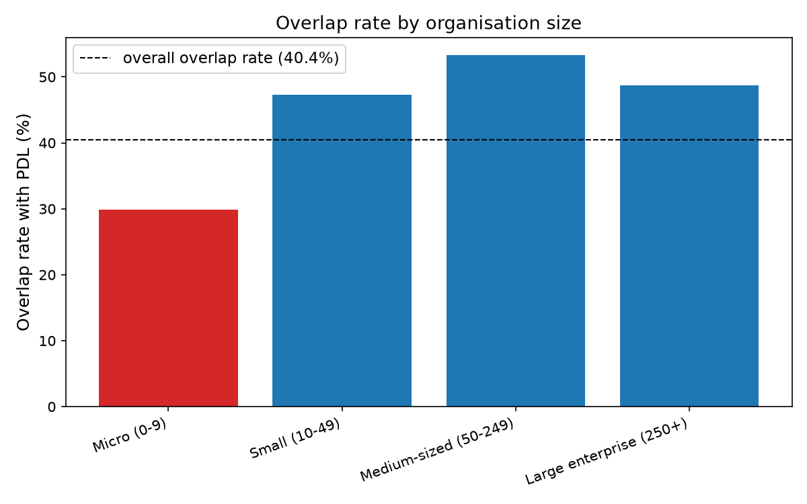

WHERE IT HOLDS UP
Not every dimension breaks down the way geography does.
By NACE section

Spread is 27-55%, roughly 2×, not 10×. No industry is badly abandoned by PDL.
By organisation size

Micro companies (0-9 employees) sit at 30%, well below Small/Medium/Large (47-53%), and Micro is GOI's largest size bucket.